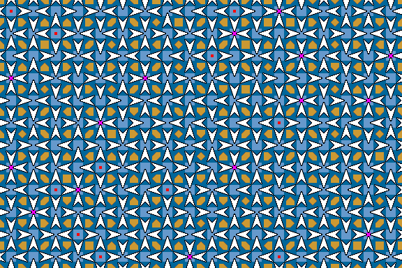
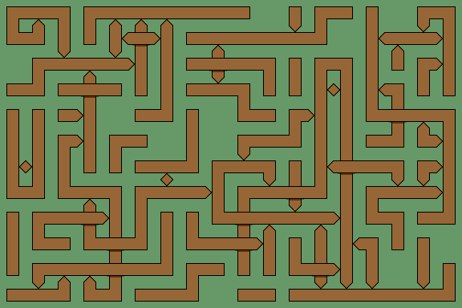

Directed Maze
In a directed maze, paths can only be traversed in one direction. This is usually indicated by an arrow. Some tile designs can show a step where path following sprites can step down but not back up.
Arrow edge tiles
Here, an arrow straddles the tile edges to indicate the allowable direction of travel between tiles. A similar method to Shape tiles is needed to ensure all edges match. So yellow edges are interpreted as allowing travel up or to the right (away from the origin) and blue edges as down or left (towards the origin).
We again have 16 different tiles.
| 0 | 1 | 2 | 3 | 4 | 5 | 6 | 7 | 8 | 9 | 10 | 11 | 12 | 13 | 14 | 15 |
Sources and sinks
A source tile (red dots) has all arrows flowing out. A sprite can start at the tile, but can never return to it. A sink tile (magenta dots) has all arrows flowing in. Sprites will be trapped at the tile, and can never leave.
It is also possible for sprites in a directed maze to become trapped in a loop.
Here is a directed maze. Paths are not shown, only the arrows between tiles. It is quite difficult to find a path between two points. A future maze solving sim may automate the process. It will find the longest path in the maze below.
Stage: Random 2-edge Directed Arrow Tiles
If paths can be one-way or absent then we naturally have a 3-edge tileset. If they can also be both-ways, then a 4-edge tileset is needed. See 3-edge Tiles for more path flow mazes.
Tilt Mazes
A tilt maze is typically a wooden maze containing a marble. The maze is rotated by 90 degrees and the marble drops under gravity. It is equivalent to walking a maze where you can only turn right or left when you 'hit' a wall. So...
1/ You can only turn through 180 degrees and retrace your path at dead-ends and bends.
2/ You can never turn at cross-road junctions. Straight across only.
3/ You can never turn into the middle exit of a 'T' junction, which acts as a directed path, flowing into the junction only.
You can create a 'Tilt' maze by replacing all 'T' junctions with directed 'T' junctions. They are shown with an arrow point. Generating interesting Tilt mazes is difficult.
Stage: Random 2-edge Tilt Tiles
[[ Add: Directed corner tilesets ]]